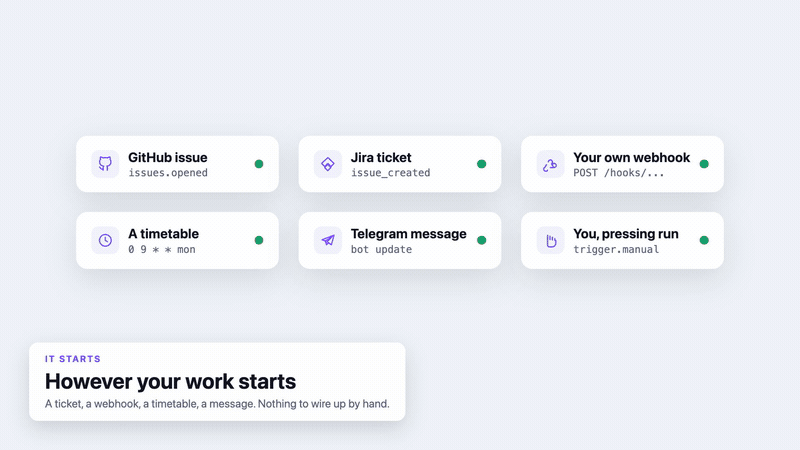

A pull request, a rendered video, a post in a channel, a deployed app. Basivo builds the pipelines and the Claude Code plugins that get you there, on your own keys.
Draw a pipeline on a canvas and it runs without you. What comes out the other end is a thing, not a log line.

Give Claude memory, a browser, a QA team and a design studio. Each plugin runs locally and keeps your data in repos you own.
Tests your web app in a real browser and hands Claude a verdict it can fix from, in the same session.
View repoDoes plain-language tasks on any website inside your own logged-in browser. Draft-first, with a confirmation before anything irreversible.
View repoSaves every session to your private GitHub repo, with secrets masked. Search past work and view a dashboard of hours, projects and tools.
View repoShared memory across related repos. Pinned rules, decisions, docs and past chats from every repo in one space.
View repoLogos, icons, covers and social images designed in SVG and HTML, then rendered to exact-size PNGs. Text is always spelled right.
View repoAnimated promo videos of your web, mobile and desktop apps, with local voiceover and generated music.
View repo# add the Basivo marketplace once claude plugin marketplace add mohamedabubasith/basivo-plugins # then install any plugin claude plugin install basivo-qa@basivo
The building blocks Basivo runs on, open for you to use.
Finds PII in text and masks it, using a fine-tuned model plus rules. Run it as a library or a self-hosted REST service.
View repoScaffolds production-hardened FastAPI authentication services, and keeps every generated project patchable from one template.
View repoA coding platform that runs on the LLM you prefer.
View repo